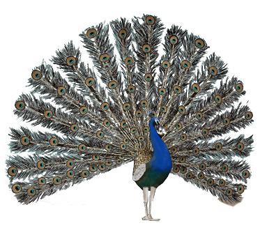
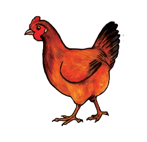
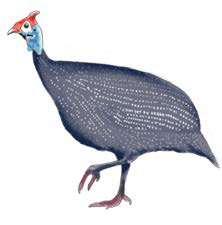
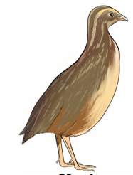

Birds
Birds are vertebrates with feathers. Their bodies are covered with feathers. Some birds are domestic while others are wild. Examples of domestic birds are chickens, ducks, pigeons, guineafowl, peacock and parrots. Examples of wild birds include kites, owls, eagles, crows, quail and ostriches. Most birds live on land, but some spend most of their time in water. Figure 14 shows domestic and wild birds.

Peacock

Hen

Guineafowl

Quail
Figure 14: Domestic and wild birds